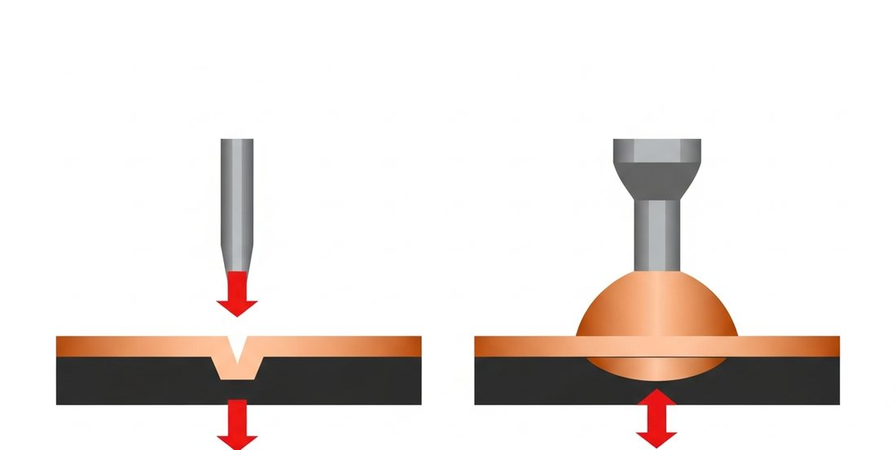
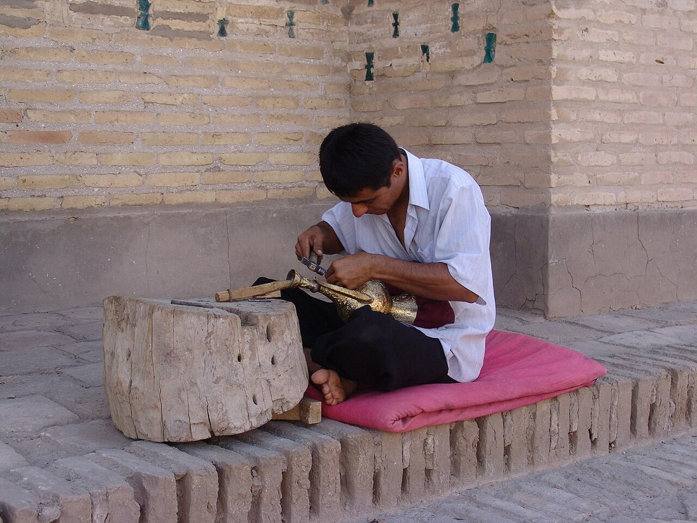
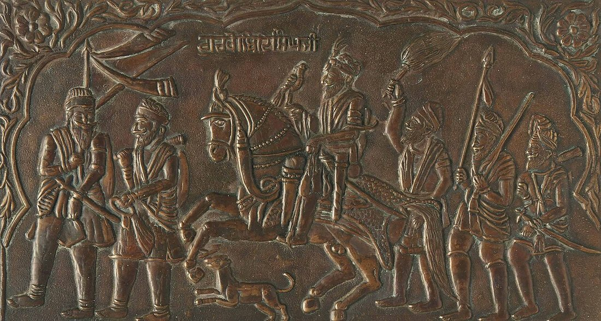
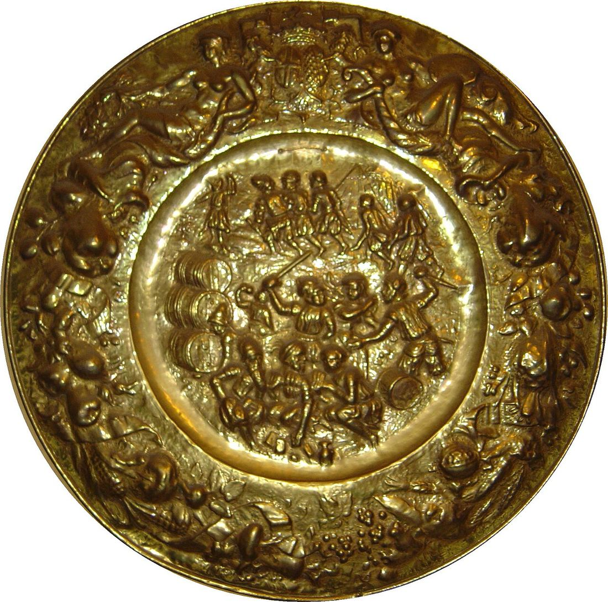

Көркем еңбек (ұлдар) · 3-бөлім · Металл өңдеу Art & Craft (Boys) · Section 3 · Metalworking Художественный труд (мальчики) · Раздел 3 · Обработка металла
Металды көркем өңдеу: шекіме және бедерлеу
Artistic Metalwork: Chasing and Embossing
Художественная обработка металла: чеканка и тиснение
Балғамен және шапқымен жұқа металл параққа бедер салу — ежелгі әрі әсем қолөнер. Shaping a relief on thin sheet metal with hammer and punch — an ancient and beautiful craft. Создание рельефа на тонком листе металла молотком и чеканом — древнее и красивое ремесло.
Металдағы бедер өнері The Art of Relief in Metal Искусство рельефа в металле
Шекіме (чеканка) мен бедерлеу (тиснение) — жұқа созылғыш металл парақты (мыс, жез, алюминий, күміс) кеспей және балқытпай, тек балғамен соғу арқылы көлемді өрнекке айналдыратын суық өңдеу тәсілдері. Металл иілгіш болғандықтан, шапқының (чекан) астында ол ағып, керекті пішінді сақтайды. Chasing and embossing are cold-working techniques that turn a thin, ductile sheet of metal (copper, brass, aluminium, silver) into a three-dimensional ornament — without cutting or melting it, using only blows of a hammer. Because the metal is malleable, it flows under the punch and keeps the shape given to it. Чеканка и тиснение — это приёмы холодной обработки, превращающие тонкий пластичный лист металла (медь, латунь, алюминий, серебро) в объёмный орнамент — без резки и плавления, одними лишь ударами молотка. Металл пластичен, поэтому под чеканом он «течёт» и сохраняет приданную форму.
Бұл өнер мыңжылдықтар бойы дамыды: скиф зергерлерінің алтын бұйымдары, шығыс табақтары мен құмандары, қазақ ерлерінің әсемделген белдіктері мен ат әбзелдері — бәрі осы техникамен жасалған. Бүгінде ол сувенир, плакета және сәндік панно жасауда қолданылады. The craft has evolved over millennia: the gold of Scythian jewellers, Eastern trays and ewers, the decorated belts and horse-harness of the steppe — all were made this way. Today it lives on in souvenirs, plaques and decorative panels. Ремесло развивалось тысячелетиями: золото скифских ювелиров, восточные подносы и кувшины, украшенные пояса и конская сбруя степи — всё это создано этой техникой. Сегодня она живёт в сувенирах, плакетках и декоративных панно.

Сол жақта — алдыңан басу (шекіме, ойық); оң жақта — артынан басу (бедер, томпақ). Left — pressed from the front (chasing, sunken); right — pressed from the back (embossing, raised). Слева — давление спереди (чеканка, углубление); справа — сзади (тиснение, выпуклость).
Чеканка (шекіме) Chasing Чеканка
Парақтың бет жағынан ұшты немесе жалпақ чеканмен соғып, сызықтар мен ойықтар салынады. Контурды нақтылайды, фон мен ұсақ детальдарды өңдейді. Нәтижесінде бедер ішке батыңқы болады. Working from the front of the sheet, pointed or flat punches drive lines and depressions into the metal. Chasing refines the outline, the background and fine detail. The result is a sunken relief. Работая с лицевой стороны листа, острыми или плоскими чеканами вбивают линии и углубления. Чеканка уточняет контур, фон и мелкие детали. Рельеф получается углублённым.
Тиснение (бедерлеу) Embossing (repoussé) Тиснение (репуссе)
Парақтың сыртқы (теріс) жағынан доғал чеканмен соғып, металды сыртқа томпайтады. Осылай беттен көтерілген, жарық пен көлеңке ойнайтын көлемді бедер пайда болады. Шетелде бұл репуссе деп аталады. Working from the back of the sheet with rounded punches pushes the metal outward. This raises a bold, three-dimensional relief that catches light and shadow. Internationally this is called repoussé. Работая с обратной (тыльной) стороны листа округлыми чеканами, металл выдавливают наружу. Так получают выпуклый объёмный рельеф, играющий светом и тенью. За рубежом его называют репуссе.
Жұмыс реті: эскизден дайын бұйымға Workflow: from sketch to finished piece Порядок работы: от эскиза до готового изделия
Эскиз. Өрнекті қағазға саламыз, көлемін металл параққа сәйкестендіреміз. Sketch. Draw the design on paper and size it to the metal sheet. Эскиз. Рисуем узор на бумаге и подгоняем размер под лист металла.
Көшіру. Контурды копир қағазбен немесе ине-чеканмен металға түсіреміз. Transfer. Trace the outline onto the metal with carbon paper or a tracing punch. Перенос. Переводим контур на металл копиркой или чеканом-канфарником.
Бекіту. Парақты смола (қара балауыз) немесе резеңке төсемге басамыз — ол соққыны жұмсартады. Bedding. Press the sheet onto pitch (chaser's wax) or a rubber pad — it cushions every blow. Закрепление. Прижимаем лист к смоле (чеканной мастике) или резиновой подложке — она смягчает удар.
Контур. Артынан соғып негізгі бедерді көтереміз (бедерлеу), сосын алдынан контурды нақтылаймыз (шекіме). Forming. Raise the main relief from the back (embossing), then sharpen the outline from the front (chasing). Формовка. Сзади поднимаем основной рельеф (тиснение), затем спереди уточняем контур (чеканка).
Фон. Канфарник чеканмен фонды ұсақ нүктелермен өңдейміз — бедер айқын көрінеді. Texturing. Stipple the background with a matting punch — the relief stands out. Фон. Канфарником покрываем фон мелкими точками — рельеф становится выразительнее.
Әрлеу. Тазалап, жылтыратамыз, тонирлеу (патина) жасап, лакпен қорғаймыз. Finishing. Clean, polish, add a patina (toning) and protect with lacquer. Отделка. Зачищаем, полируем, наводим патину (тонировку) и защищаем лаком.
Салыстыру: шекіме мен бедерлеу Comparison: chasing vs. embossing Сравнение: чеканка и тиснение
| Признак | Чеканка | Тиснение (репуссе) |
|---|---|---|
| Сторона работы | лицевая | обратная (тыльная) |
| Направление рельефа | углублённый (внутрь) | выпуклый (наружу) |
| Главный инструмент | острый и плоский чеканы | округлые чеканы-пуансоны |
| Задача | контур, фон, детали | объём, основная форма |
| Подложка | смола, свинец | смола, мягкая резина |
| Типичные изделия | панно, плакетки, монеты | посуда, оклады, маски |
| Белгісі | Шекіме | Бедерлеу (репуссе) |
|---|---|---|
| Жұмыс жағы | бет жағы | теріс (артқы) жағы |
| Бедер бағыты | батыңқы (ішке) | томпақ (сыртқа) |
| Негізгі құрал | ұшты және жалпақ чекан | доғал чекан-пуансон |
| Мақсаты | контур, фон, деталь | көлем, негізгі пішін |
| Төсем | смола, қорғасын | смола, жұмсақ резеңке |
| Тән бұйымдар | панно, плакета, монета | ыдыс, әшекей, маска |
| Feature | Chasing | Embossing (repoussé) |
|---|---|---|
| Working side | front | back (reverse) |
| Relief direction | sunken (inward) | raised (outward) |
| Main tool | pointed & flat punches | rounded punches |
| Purpose | outline, background, detail | volume, main form |
| Backing | pitch, lead | pitch, soft rubber |
| Typical pieces | panels, plaques, coins | vessels, mounts, masks |
Шеберлер мен бұйымдар (суретті үлкейту үшін басыңыз) Masters and works (click an image to enlarge) Мастера и изделия (нажмите на фото, чтобы увеличить)



Материалдар Materials Материалы
Құрал-сайман Tools Инструменты
Чекандар әртүрлі ұшты: дөңгелек, тегіс, нүктелі, сопақ. Punches come with many tips: round, flat, dotted, oval. Чеканы бывают с разными бойками: круглым, плоским, точечным, овальным.
Қауіпсіздік Safety Безопасность
- Көзілдірік киіңіз — металл жоңқасынан сақтайды. Wear goggles — guard against metal slivers. Надевайте очки — берегитесь стружки и осколков.
- Чеканды тік ұстаңыз, саусақты соққы астына қоймаңыз. Hold the punch upright; keep fingers clear of the blow. Держите чекан вертикально; не подставляйте пальцы под удар.
- Парақтың өткір қырын файлмен өтіңіз. File the sharp edges of the sheet smooth. Острые кромки листа сглаживайте напильником.
- Смоланы қыздырғанда желдетіңіз. Ventilate the room when heating pitch. Разогревая смолу, проветривайте помещение.
Қызық дерек Did you know? Это интересно
Әлемге әйгілі Тутанхамон маскасы мен Бостандық мүсінінің мыс «терісі» де бедерлеу (репуссе) техникасымен жасалған. Демек, сен үйренетін тәсіл — кішкене сувенирден алып ескерткішке дейін бір принципке негізделген: жұқа металды балғамен бедерге айналдыру. The world-famous mask of Tutankhamun and the copper «skin» of the Statue of Liberty were both made by embossing (repoussé). So the method you are learning — from a small souvenir to a giant monument — rests on one principle: turning thin metal into relief with a hammer. Всемирно известная маска Тутанхамона и медная «кожа» статуи Свободы выполнены техникой тиснения (репуссе). Значит, приём, который ты осваиваешь, — от маленького сувенира до гигантского памятника — основан на одном принципе: превратить тонкий металл в рельеф молотком.